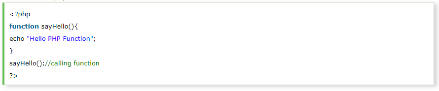
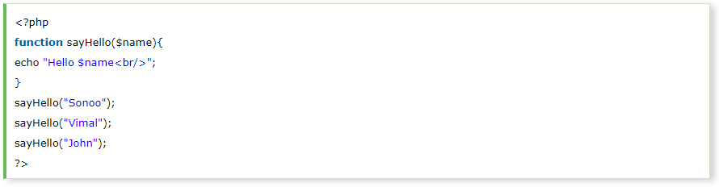
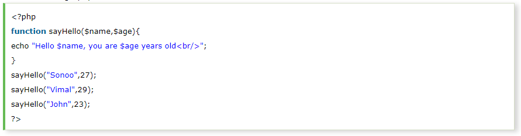
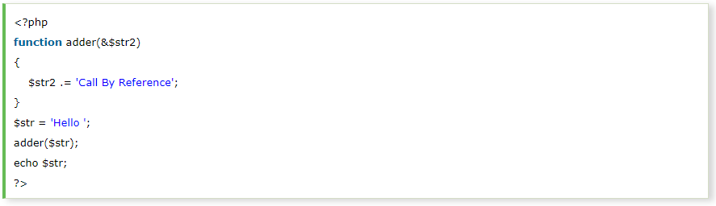
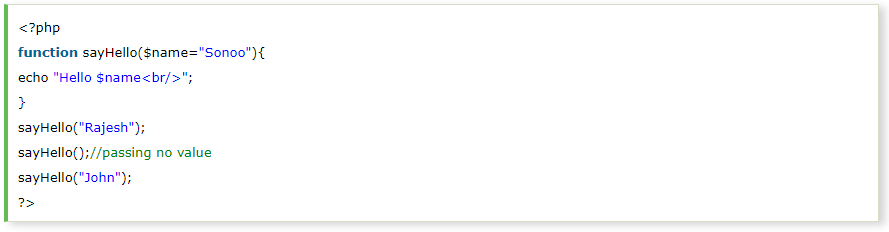
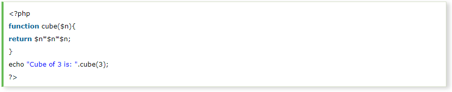

PHP function is a piece of code that can be reused many times. It can take input as argument list and return value. There are thousands of built-in functions in PHP.
In PHP, we can define Conditional function, Function within Function and Recursive function also.
Code Reusability:PHP functions are defined only once and can be invoked many times, like in other programming languages.
Less Code:It saves a lot of code because you don't need to write the logic many times. By the use of function, you can write the logic only once and reuse it.
Easy to understand:PHP functions separate the programming logic. So it is easier to understand the flow of the application because every logic is divided in the form of functions.
We can declare and call user-defined functions easily. Let's see the syntax to declare user-defined functions.
File: function1.php
Output:
We can pass the information in PHP function through arguments which is separated by comma.
PHP supports Call by Value (default), Call by Reference, Default argument values and Variable-length argument list.
Let's see the example to pass single argument in PHP function.
File: functionarg.php
Output:
Let's see the example to pass two argument in PHP function.
File: functionarg2.php
Output:
Value passed to the function doesn't modify the actual value by default (call by value). But we can do so by passing value as a reference.
By default, value passed to the function is call by value. To pass value as a reference, you need to use ampersand (&) symbol before the argument name.
Let's see a simple example of call by reference in PHP.
File: functionref.php
Output:

We can specify a default argument value in function. While calling PHP function if you don't specify any argument, it will take the default argument. Let's see a simple example of using default argument value in PHP function.
File: functiondefaultarg.php
Output:
Let's see an example of PHP function that returns value.
File: functiondefaultarg.php
Output: